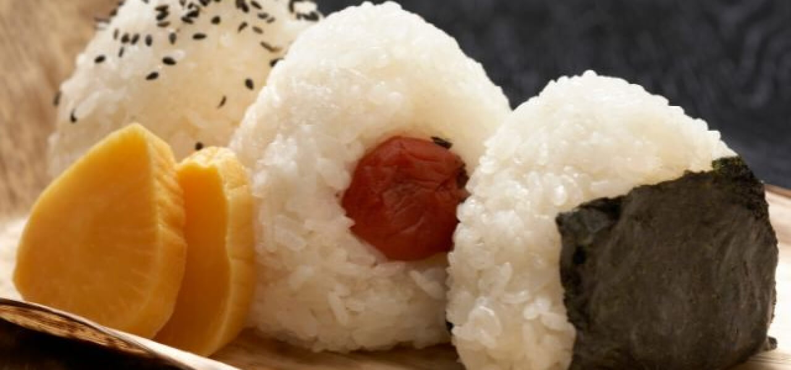
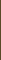
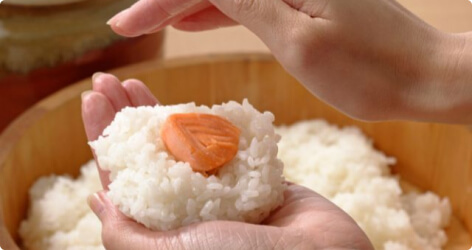
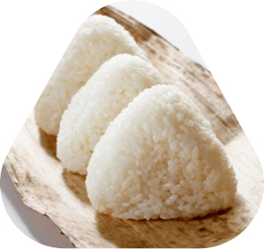
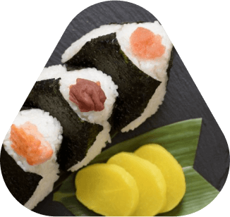

Enjoy your Onigiry life!

About Us
“Happiness in your hand”
We aim to spread our Onigiri culture from Japan to Canada and also
make people smile and happy with fresh healthy handmade Onigiri!

History
Onigiri is a traditional Japanese rice ball that has been enjoyed for over a thousand years.
It originated as a portable and convenient food for travelers and soldiers,
evolving over time with various fillings and shapes.

Onigiri is closely associated with Japanese culture and tradition,
often enjoyed during picnics, as a snack, or as part of a bento.
Its popularity has spread worldwide, making it a beloved comfort food
with both traditional and innovative fillings.

Menu
Onigiri
Side Menu

Drink
Contact
We are available for online order.
If you have any question, please feel free to ask us!